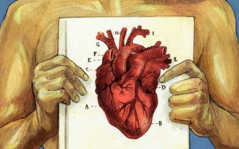

Definiciones & Conceptos Cardiacos
Obstetricia: Parte de la medicina que se ocupa del embarazo, el parto y el período de tiempo posterior a este.
(Delgado, 2020)
ADN: Sigla de ácido desoxirribonucleico, proteína compleja que se encuentra en el núcleo de las células y constituye el principal constituyente del material genético de los seres vivos.
(Moreno, 2013)
METAZOOS: Grupo sin categoría taxonómica de animales pluricelulares constituidos por células diferenciadas y agrupadas en tejidos y órganos.
(Moreno, 2013)
GAMETOGÉNESIS: Proceso de formación de los gametos. Difusa: En cualquier parte del cuerpo. Localizada: En las gónadas.
(Moreno, 2013)
ONTOGENIA: Desarrollo de un individuo desde el huevo hasta la senectud. (Ontogénesis o Embriogénesis).
(Moreno, 2013)
ESTADOS: Fecundación; segmentación, blastulación, gastrulación, diferenciación y crecimiento.
(Moreno, 2013)
SEGMENTACIÓN: Es la división del zigoto que origina los blastómeros. Estos se agrupan en una mórula que tiene casi el mismo tamaño que el zigoto.
(Moreno, 2013)
BILATERAL: El primer plano de segmentación corresponde al plano de simetría del animal, Tunicados.
(Moreno, 2013)
GASTRULACIÓN: Es el proceso de formación de la gástrula. Consiste en la migración de los blastómeros que origina dos capas: una externa (ectodermo) y otra interna (endodermo).
(Moreno, 2013)
GASTRONEURALIA: El sistema nervioso deriva, al menos en parte, del órgano apical larvario. Presentan un par de cordones nerviosos longitudinales ventrales. Protóstomos.
(Moreno, 2013)
NOTONEURALIA: Pierden el órgano apical larvario. El sistema nervioso se origina de un área longitudinal dorsal. Cordados.
(Moreno, 2013)
MEDICINA: ciencia que permite prevenir y curar las enfermedades del cuerpo humano. Medicina también se utiliza como sinónimo de medicamento.
(Zamudio, 2023)
Ácido Úrico: Es un químico creado cuando el cuerpo descompone sustancias llamadas purinas.
(MAYAGUEZ, 2014)
Aminoácidos: Compuestos orgánicos que se combinan para formar proteínas. Existen 20 aminoácidos.
(MAYAGUEZ, 2014)
Anestesia: Acto médico controlado que, a través de una sustancia anestésica, permite bloquear la sensibilidad de dolor del paciente en aquel lugar en el que el médico trabajará para quitar la dolencia del paciente en cuestión.
(MAYAGUEZ, 2014)
Aneurisma: Dilatación parecida a un globo que se produce en un vaso sanguíneo o en el corazón debido a una debilitación de la pared del vaso o músculo cardíaco.
(MAYAGUEZ, 2014)
Antioxidantes: Sustancias que retardan o bloquean parte del daño causado por los radicales libres. Algunos son el betacaroteno, el licopeno o las vitaminas A, C y E.
(MAYAGUEZ, 2014)
Arritmia: Ritmo cardíaco anormal.
(MAYAGUEZ, 2014)
Arteria: Vaso sanguíneo que transporta sangre rica en oxígeno al organismo.
(MAYAGUEZ, 2014)
Artritis Reumatoide: Es una forma de artritis que causa dolor, inflamación, rigidez y pérdida de la función de las articulaciones. Puede afectar cualquier articulación, pero es común en las muñecas y los dedos.
(MAYAGUEZ, 2014)
Ataque Cardíaco: Muerte o daño de una parte del músculo cardíaco causados por una falta de sangre rica en oxígeno en el corazón.
(MAYAGUEZ, 2014)
Ataque Cerebral: Perturbación repentina del flujo de sangre al cerebro, debido a un coágulo en un vaso sanguíneo o una pérdida de sangre.
(MAYAGUEZ, 2014)